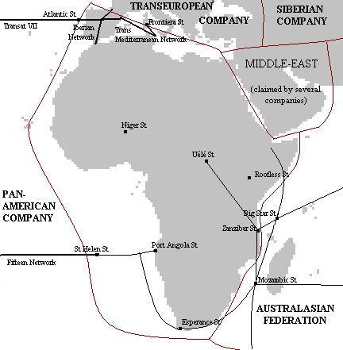

| plan du site |
La Compagnie Africanienne
|
Histoire Organisation Réseaux et stations Autres informations Romans |
 |
|
Notes sur la carte La carte est cliquable Elle est une interprétation personnelle de ma lecture des Compagnie des Glaces. |
Cette compagnie est une des moins connues.
Histoire officielle : c'est un groupe qui vivait dans une mine à ciel ouvert au début de la Grande Panique qui eut l'idée d'utiliser les locomotives et le rail pour survivre. Elle occupa rapidement tout le continent africain. Il semble que vers 2348 EG, il y eut une lutte d'influence pour le gouvernement de cette compagnie.
En réalité, le début de la Compagnie ne semble avoir démarré que beaucoup plus tard.
En 2370 EG, l'Africania a eu un dégel moins brusque qu'ailleurs, mais ensuite, elle fut complètement inhabitable, car entièrement dans la Ceinture de Feu.
Elle est dirigée par un conseil d'administration qui siège à Niger Station.
Au nord de la compagnie :
Au sud de la Compagnie, il y a plusieurs stations, sans indication de réseaux
La police intérieure s'appelle la Garde Noire.
Bien que des légendes courent sur l'existence de zones tempérées hors des glaces, mais il la température y est toujours de -10°C à -20°C.